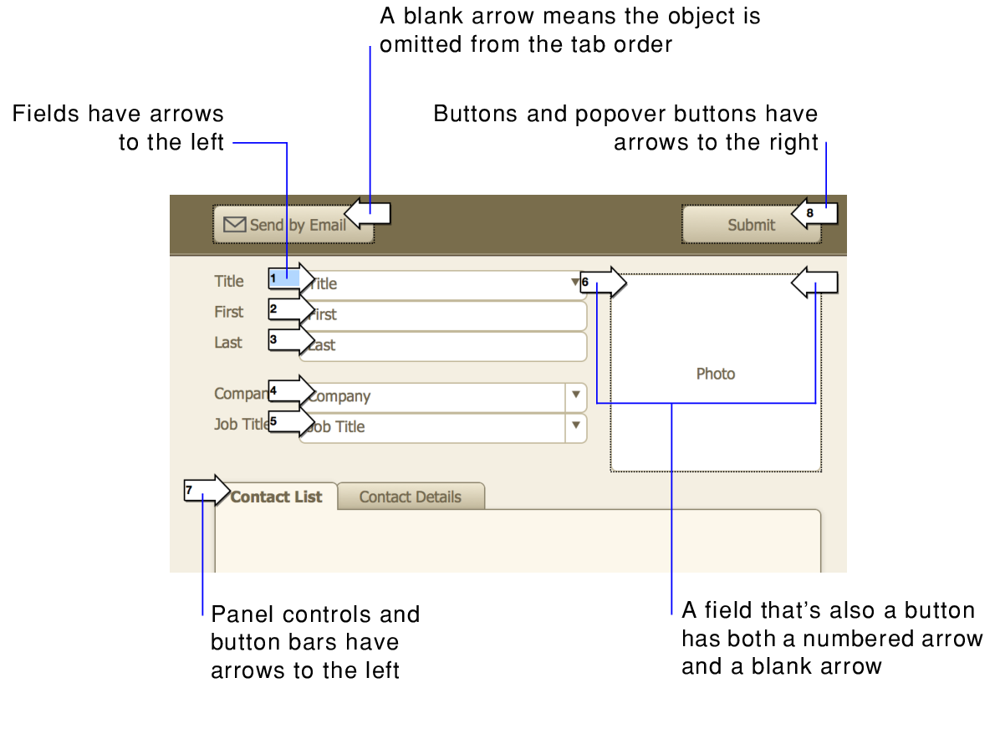

When you press Tab in Browse mode or Find mode, the default behavior is to move left to right and top to bottom. You can change this default tab order, and even omit fields if you want.
1. In Layout mode, choose Layouts menu > Set Tab Order.
FileMaker Pro Advanced displays numbered arrows pointing to fields and other objects, along with the Set Tab Order dialog box.

2. With the Set Tab Order dialog box open, specify the options you want to use:
To | Do this |
Reorder the tab order for individual objects | Click the arrow beside the object. When you click another arrow, or after you click OK in the Set Tab Order dialog box, the number you replaced is incremented, and any objects after it in the tab order are automatically resequenced. |
Place a new object in the tab order | Click the arrow beside the object. The next number in the tab order appears in the arrow. Leave this, or backspace to delete the number and type the number you want. When you click another arrow, or after you click OK in the Set Tab Order dialog box, the number you replaced is incremented, and any objects after it in the tab order are automatically resequenced. |
Add the rest of the objects to the tab order | For Add remaining, select Objects and click Add. |
Create a new tab order for all objects | •Click Clear All, and for Add remaining, select Objects and click Add. •Or, click Clear All and click arrows in the order you want. FileMaker Pro Advanced inserts numbers in that order in the arrows. |
Create a new tab order for fields only or for buttons only | •Click Clear All, and for Add remaining, select Fields only or Buttons only and click Add. •Or, click Clear All and click arrows in the order you want. FileMaker Pro Advanced inserts numbers in that order in the arrows. |
Remove objects from the tab order | Choose one of the following: •As you set a new tab order, don't click the objects you want to omit. •For objects that already display a number, select the number and press Backspace or Delete. •For Remove, select All fields or All buttons and click Remove. |
•Summary fields can't be included in the tab order. Calculation fields can be included in the tab order, but you can't tab into them in Browse mode (only in Find mode).
•Fields that are formatted to prevent entry can't be tabbed into in Browse mode or Find mode.
•In List view, you can't tab from an object in the body part to an object in another part or to another record.
•Buttons are not included in the default tab order. To include buttons in the tab order, use the options in the Set Tab Order dialog box.
•If you have added a panel control to the layout, when you press the Tab key, you can navigate only to objects on the frontmost panel. To automate navigation to another panel, use the Go To Field script step and specify a target field that is on the panel you want to bring to the front. See Selecting and working with objects on panel controls.
•If you have added a popover to the layout, you can tab between fields in the popover, but you must open the popover first (by clicking the popover button or by tabbing to the popover button, then pressing the Space bar). You cannot tab into or tab out of a popover.
•To specify whether it's possible to move to the next field using the Enter key or Return key, see Setting keys for moving between fields.
•You can tab into and within web viewers, but you can't control the tab order within a web viewer. After you tab out of a web viewer, the tab order continues as defined in the FileMaker Pro Advanced layout.